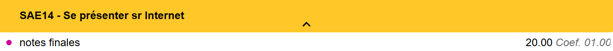

Page de garde

Naël ZEGGAI
Formation : BUT Réseaux et Télécommunications
Année : 1ère année
Établissement : IUT d'Ifs
🌐 Administrer les réseaux et l'internet
Gestion et configuration des infrastructures réseau, protocoles de communication, et services internet.
🔗 Connecter les entreprises et les usages
Mise en place de solutions de connectivité adaptées aux besoins des organisations et utilisateurs.
💻 Créer des outils et applications pour les RT
Développement d'applications et d'outils spécialisés dans le domaine des réseaux et télécommunications.
📚 Situations d'Apprentissage et d'Évaluation (SAÉ)
🎓 Semestre 1
Se sensibiliser à l’hygiène informatique et à la cybersécurité
S’initier aux réseaux informatiques
Découvrir un dispositif de transmission
Se présenter sur Internet
Traiter des données
🚀 Semestre 2
Construire un réseau informatique pour une petite structure
Mesurer et caractériser un signal ou un système
Mettre en place une solution informatique pour l’entreprise
Projet intégratif
Apprentissage SAÉ
Cette section présente l'analyse détaillée de chaque SAE avec les traces, réflexions et auto-évaluations correspondantes.
Présentation générale
Dans cette SAE l’objectif est de suivre les cours du MOOC proposé par l’ANSII pour fournir à la fin un diaporama en groupe sur ce que l’on a appris durant cette formation et un qcm noté.
Compétences : Administrer les réseaux et l’Internet
Apprentissages Critiques
• Comprendre l’architecture et les fondements des systèmes numériques, les principes du codage de l’information, des communications et de l’Internet
• Maîtriser les rôles et les principes fondamentaux des systèmes d’exploitation afin d’interagir avec ceux-ci pour la configuration et l’administration des réseaux et services fournis
• Identifier les dysfonctionnements du réseau local et savoir les signaler
Réalisation
Lors de cette SAE nous avions eu 12 heures de projet pour suivre les cours du MOOC qui était en ligne et préparer le diaporama. Personnellement j’étais dans un groupe de 4 et notre oral portait sur la protection de mot de passe .
Résultat et preuves
A la fin de la SAE j’ai obtenu le MOOC de l’ANSII, avec mon groupe nous avons eu 14 à l’oral et j’ai eu 19.5 sur le qcm
Présentation générale
Dans cette SAE l’objectif est de mettre en place un réseau informatique pour une entreprise fictive, cela nécessite l’utilisation de deux switchs 2960 et d’un switch L2-L3 3750. Nous devons mettre en place des VLANs pour différencier chaque service de l’entreprise ( Comptabilité, vente...), créer des VM, mettre un accès ssh, mettre en place un système de partage de fichiers et un serveur web
Compétences : Administrer les réseaux et l’Internet
Apprentissages Critiques
• Maîtriser les lois fondamentales de l’électricité afin d’intervenir sur des équipements de réseaux et télécommunications
• Comprendre l’architecture et les fondements des systèmes numériques, les principes du codage de l’information, des communications et de l’Internet
• Configurer les fonctions de base du réseau local
• Maîtriser les rôles et les principes fondamentaux des systèmes d’exploitation afin d’interagir avec ceux-ci pour la configuration et l’administration des réseaux et services fournis
• Identifier les dysfonctionnements du réseau local et savoir les signaler
• Installer un poste client, expliquer la procédure mise en place
Réalisation
Pour cette SAE nous étions 5 dans notre groupe, on a donc décider de se répartir les tâches avec un Notion qui est un site pour organiser les projets. Un membre s'occupait des livrables (schéma,diagramme etc..), un s'occupait de la partie machine virtuelle et trois dont moi s'occupaient de la partie configuration des switchs et du routeur pour tout relier et faire en sorte de reçevoir internet sur les machines reliées à notre réseau de manière sécurisé notamment à l'aide du SSH
Résultat et preuves
Sur cette SAE il y avait 4 notes : une note sur la maquette réseau, une sur cisco et une sur le TP. Pour ce qui s'agit de la maquette nous avons pu la terminer à temps avec la note de 18.42/20, pour cisco après avoir passé beaucoup de temps à réviser j'ai eu 92% ce qui correspond à 16.67/20 pour le TP j'ai malheureusement eu 5.83/20 et pour le QCM 14.70
💭 Réflexion personnelle et auto-évaluation
Problèmes solutionnés :Le jour de l'évaluation de notre maquette réseau, nous avions rajouté une commande sur les switchs permettant aux portsde se connceter plus rapidement, malheureusement nous n'avions pas lu la documentation et la commande n'étais pas appropriée. Heureusement nous avions sauvegardé nos configurations de switchs et tout à refonctionné
Problèmes non solutionnés :Sur la maquette il n'y a pas eu de problème sur lequel nous avons bloqué
Axes d'amélioration :J'aurai dû plus me préparer au TP noté ce qui m'aurait permis d'avoir une meilleure note sur la SAE même si ma note finale est satisfaisante.
Présentation générale
Durant cette SAE l’objectif est d’apprendre a faire différentes mesure en télécommunications notamment sur du cuivre ou de la fibre optique. Cette SAE nous permet aussi de découvrir le câblage lié a chaque type de mesure.
Compétences : Connecter les entreprises et les usagers
Apprentissages Critiques
• Mesurer, analyser et commenter les signaux
• Déployer des supports de transmission à son interlocuteur
• Communiquer avec un tiers (client, collaborateur...) et adapter son discours et sa langue à son interlocuteur
Réalisation
Durant cette SAE nous étions par groupe de 6, nous avons décidé de faire 2 groupe, un pour la bobine de cuivre, donc mesuré la longueur de câble grâce a des mesures et calculs et un groupe pour la fibre optique. Le travail a été rendu dans les temps nous avons même finis un peu en avance.
Résultat et preuves
Dans cette SAE il y avait aussi un QCM pour vérifier les connaissances mobilisées durant ce projet
💭 Réflexion personnelle et auto-évaluation
Problèmes solutionnés : Pour la mesure de la bobine nous avions trouvé plusieurs valeurs différentes au sein du groupe, nous avons donc comparer, expliquer et vérifier pour trouver laquelle était réélement la bonne
Axes d'amélioration : Nous aurions dû rendre un compte rendu plus construit puisque c'est ça qui nous a retiré des points
Présentation générale
L’objectif de cette SAE est de créer sa propre page web responsive ( c’est à dire qu’il s’adapte sur PC, téléphone et tablette) grace a savoir acquis en R109 c’est à dire avec du HTML et du css tout en testant le site avec les validateurs internet W3C
Compétences : Créer des outils et applications informatiques pour les R&T
Apprentissages Critiques
• Utiliser un système informatique et ses outils
• Connaître l’architecture et les technologies d’un site Web
Réalisation
Pour la création de ce site j’ai choisi un thème que j’aime beaucoup qui est le MMA, j’ai donc commencé par faire un brouillon de mon site pour savoir à quoi il allait ressembler, je me suis alors attaqué au HTML en premier pour le contenu du site ( texte,images,vidéos…) une fois cela fait je l’ai stylisé avec du CSS et fait les media-queries pour que mon site soit esthétique sur pc, tablette et téléphone. J’ai rendu le site dynamique avec des animations et pour finir je ‘ai fais validé sur un validateur HTML.
Résultat et preuves
💭 Réflexion personnelle et auto-évaluation
Problèmes solutionnés :Un des plus gros problèmes a eu lieu l’avant vieille du jour de dépôt du site puisque j’ai voulu régler un petit détail et cela a tout déréglé, beaucoup d’éléments du site on changé de place et lorsque c’était bon sur la version pc la version téléphone n’était pas du tout adapté. J’ai heureusement réussis à régler le problème après plusieurs heures.
Problèmes non solutionnés :Tout les problèmes que j'ai pu rencontrer ont été résolu
Axes d'amélioration : J’aurai peut être dû créer plus de balises "div" qui permettent de séparer les éléments entre eux ce qui m’aurait évité de passer plusieurs heures à régler un problème.
Présentation générale
Pendant cette SAE nous devions récupérer des données provenant de la PokeAPI afin de créer une statistique ( par exemple quel pokemon est le plus grand ) en python. Les données sont de base en format JSON, avec un programme nous devons les convertir en markdown pour ensuite les convertir en HTML. Plusieurs programmes python étaient donc requis.
Compétences : Créer des outils et applications informatiques pour les R&T
Apprentissages Critiques
• Utiliser un système informatique et ses outils
• Connaître l’architecture et les technologies d’un site Web
• Lire, exécuter, corriger et modifier un programme
• Traduire un algorithme, dans un langage et pour un environnement donné
• S’intégrer dans un environnement propice au développement et au travail collaboratif
• Choisir les mécanismes de gestion de données adaptés au développement de l’outil et argumenter ses choix
Réalisation
Lors de cette SAE nous étions par binôme, tout d’abord nous nous sommes posé la question : Quel statistique allons nous réaliser ? Après réflexion nous avons choisi de faire un top 10 des pokémons les plus nuls en faisant la somme de toutes leurs statistiques ( PV, attaque...). Pour faire cette somme nous avons crée un premier programme appelé « pokestats ». Une fois la liste établi il nous a fallu la convertir en markdown et en HTML avec d’autre programme comme « md_to_html ».
Résultat et preuves
💭 Réflexion personnelle et auto-évaluation
Problèmes solutionnés :Pendant le projet nous avions mal lu l’énoncé en effet pour convertir un fichier markdown vers HTML nous ajoutions une fonction dans chaque programme alors que l’énoncé nous demandait de créer un programme auquel nous faisions appel ce qui permettait d’avoir un programme moins long. Nous avons donc implémenter ce programme et tout fonctionnait.
Axes d'amélioration :Nous aurions peut être dû nous séparer et nous mettre chacun avec quelqu'un qui maîtrise mieux le python.
Présentation générale
Lors de cette SAE il n y avait pas vraiment de projet en groupe puisque les 3 notes sont : un QCM, une certification Cisco et un TP. Le QCM portait sur des cours Windows en ligne que nous devions suivre pendant cette SAE. Le TP concernait également ces cours.
Compétences : Administrer les réseaux et l’Internet
Apprentissages Critiques
• Comprendre l’architecture et les fondements des systèmes numériques, les principes du codage de l’information, des communications et de l’Internet
• Configurer les fonctions de base du réseau local
• Maîtriser les rôles et les principes fondamentaux des systèmes d’exploitation afin d’interagir avec ceux-ci pour
la configuration et l’administration des réseaux et services fournis
• Identifier les dysfonctionnements du réseau local et savoir les signaler
• Installer un poste client, expliquer la procédure mise en place
Réalisation
Lors de cette SAE j’ai d’abord fais le choix de suivre les cours de chez Cisco qui étaient très long puis ensuite de regarder les vidéos sur Windows (environ 3 heures de vidéo ) . Nous avions à disposition un TP d’entraînement pour préparer celui qui allait être noté je l’ai donc fait pour me préparer au mieux pour le jour J.
Résultat et preuves
Le projet ayant eu lieu lors de ce semestre nous n'avons pas encore les notes. La seule note que j'ai eu est le test Cisco où j'ai eu 95%
💭 Réflexion personnelle et auto-évaluation
Problèmes solutionnés :Pas vraiment de problème rencontrées puisque j’ai pu suivre les cours cisco et windows sans problème
Axes d'amélioration :Malgré le fait que j'ai travaillé le TP d'entraînement j'aurai aimé avoir un créneau avzc un professeur pour mieux comprendre certaines notions.
Présentation générale
Lors de cette SAE il y avait un projet à réaliser en groupe de 6 et un en binôme. Pour le travaille en binôme nous devions utilisé le site Cartoradio.fr pour localiser les émeteurs 4G/5G les plus proches et s’en servir pour des mesures grâce à Matlab. Pour le travail de groupe nous avons également utilisé Matlab pour modifier du code et faire des graphiques.
Compétences : Connecter les entreprises et les usagers
Apprentissages Critiques
• Caractériser des systèmes de transmissions élémentaires et découvrir la modélisation mathématique de leur
fonctionnement
• Déployer des supports de transmission
• Communiquer avec un tiers (client, collaborateur...) et adapter son discours et sa langue à son interlocuteur
Réalisation
Le projet qui m’a pris le plus de temps est celui en groupe en effet nous devions rendre un compte rendu par groupe concernant les bandes de fréquences occupés. Dans ce projet nous nous sommes surtout intéressés aux fréquences radio et celles qui sont les plus qualitatives à proximité.
Résultat et preuves
Nous avons finis nos 2 projets dans les temps. Malheureusement toujours pas de preuve puisque nous n'avons aucune note.
💭 Réflexion personnelle et auto-évaluation
Problèmes solutionnés :Les problèmes que nous avons rencontrés ne concernaient pas directement le sujet mais la matériel en effet lors des heures en autonomie tout les groupes faisaient la même chose en même temps donc avoir une antenne RTL-SDR. Donc nous nous sommes prêtés les antennes entre groupe pour que tout le monde puisse avancer.
Axes d'amélioration :Nous aurion dû mieux nous répartir les tâches entre nous sue le travail à 6 puisque certaines personnes se sont retouvées à travailler plus que d'autres.
Présentation générale
En R209 nous avons réalisé par groupe de 4 un site internet nommé Instant Weather qui donne la météo grâce au code postale. Dans cette SAE nous devons reprendre le code de ce site et l’améliorer en rajoutant des fonctionnalités comme le fait de choisir la vitesse du vent par exemple.
Compétences : Créer des outils et applications informatiques pour les R&T
Apprentissages Critiques
• Utiliser un système informatique et ses outils
• Lire, exécuter, corriger et modifier un programme
• Traduire un algorithme, dans un langage et pour un environnement donné
• Connaître l’architecture et les technologies d’un site Web
• Choisir les mécanismes de gestion de données adaptés au développement de l’outil et argumenter ses choix
• S’intégrer dans un environnement propice au développement et au travail collaboratif
Réalisation
Tout d’abord j’ai repris le code que nous avions initialement avec mon groupe. J’ai changé le CSS puisque je voulais que mon site ai un thème différent de celui de base. Ensuite j’ai ajouté les nouvelles fonctionnalités comme le cumul de pluie, la vitesse du vent ou encore les coordonnées de la commune. Le projet ne m’a pas pris énormément de temps à faire puisque la base du site avait déjà été réalisé en R209.
Résultat et preuves
Voici mon site Internet :
💭 Réflexion personnelle et auto-évaluation
Problèmes solutionnés :Le seul problème que j’ai eu est en rapport avec le javascript en effet ce langage informatique est assez nouveau pour moi puisque je n’en avait jamais fais avant. Ce projet m’a donc également aidé dans l’approfondissement de ce langage.
Problème non solutionné:J'aurai voulu ajouter une case à cocher pour voir l'UV chaque jour mais cela était trop compliqué puisqu'il fallait appeler une autre API.
Présentation générale
Cette SAE est la dernière de l'année et fait office de bilan. En effet il y a plusieurs parties : Réseau, Télécommunication, Maths et Anglais. En réseau nous devions faire une maquette un petit peu à l'image de la SAE 12 mais en la complexifiant un peu avec des nouvelles notions. En Télécommunication nous avons eu un QCM qui portait sur une séance de TP de la SAE. En maths il y a eu plusieurs séances puisque il y avait plusieurs choses à comprendre pour l'examen final. Et en anglais nous n'avons pas eu de séance puisqu'il y avait du vocabulaire et des définitions à apprendre.
Compétences :
• Administrer les réseaux et l’Internet
• Connecter les entreprises et les usagers
• Créer des outils et applications informatiques pour les R&T
Apprentissages Critiques
• AC11.01 | Maîtriser les lois fondamentales de l’électricité afin d’intervenir sur des équipements de réseaux et télécommunications
• AC11.02 | Comprendre l’architecture et les fondements des systèmes numériques, les principes du codage de l’information, des communications et de l’Internet
• AC11.03 | Configurer les fonctions de base du réseau local
• AC11.04 | Maîtriser les rôles et les principes fondamentaux des systèmes d’exploitation afin d’interagir avec ceux-ci pour
la configuration et l’administration des réseaux et services fournis
• AC11.05 | Identifier les dysfonctionnements du réseau local et savoir les signaler
• AC11.06 | Installer un poste client, expliquer la procédure mise en place
• AC12.01 | Mesurer, analyser et commenter les signaux
• AC12.02 | Caractériser des systèmes de transmissions élémentaires et découvrir la modélisation mathématique de leur
fonctionnement
• AC12.03 | Déployer des supports de transmission
• AC12.04 | Connecter les systèmes de ToIP
• AC12.05 | Communiquer avec un tiers (client, collaborateur...) et adapter son discours et sa langue à son interlocuteur
• AC13.01 | Utiliser un système informatique et ses outils
• AC13.02 | Lire, exécuter, corriger et modifier un programme
• AC13.03 | Traduire un algorithme, dans un langage et pour un environnement donné
• AC13.04 | Connaître l’architecture et les technologies d’un site Web
• AC13.05 | Choisir les mécanismes de gestion de données adaptés au développement de l’outil et argumenter ses choix
• AC13.06 | S’intégrer dans un environnement propice au développement et au travail collaboratif
Réalisations et traces
Pour commencer en réseau nous nous sommes séparés le travail, pour ma part j'ai réalisé les schémas qui faisaient partis des livrables à rendre ainsi qu'à la configuration des switchs c'est à dire à la mise en place des VLANs, des liens agrégés etc... Pour la partie télécommunications lors du TP j'ai appris à manier les formules qui étaient demandées pour le lendemain ( QCM ), en maths j'ai d'abord lu toutes les pages de cours qui portaient sur les nouvelles notions puis je me suis entraîné à faire les sujets qui étaient tombés les années précédentes pour me préparer au mieux à l'examen final. Et en anglais je me suis entraîné comme conseillé à faire un rapide résumé de mes journées pour être à l'aise le jour de l'examen final avec la partie expression écrite qui porte sur le déroulé de la SAE 24.
Résultat et preuves
Pour la maquette réseau l'évaluation s'est très bien passé même si tout n'était pas parfait, en Télécommunication je n'ai pas retrouvé tout ce qui était censé être dans le QCM et j'ai eu 7.69. En anglais j'ai eu 15.5 et je n'ai pas encore ma note en maths.
Axes d'amélioration : Sur la maquette réseau nous avons mis des VLANs sur le switch L2-L3 ce qui n'est pas interdit mais cela n'est pas pratique surtout lorsque l'on veut faire du routage, on nous l'a notamment fait remarquer pendant l'évaluation.